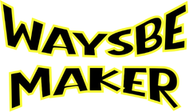

Waysbe Maker
처음인 사람도 쉽게! 3D프린팅, Waysbe Maker와 함께 해요!
하단에서 원하는 링크를 눌러 들어가세요!
Instagram
메이커의 일상 & 3D프린팅 꿀팁
YouTube
3D프린팅 관련 쉽고 자세한 튜토리얼
Gumroad
Maker Waysbe 제작, 쉬운 3D프린팅을 위한 무료, 유료 프로그램 다운로드
MakerWorld
무료 출력 파일 모델
Cults3D
유료 출력 파일 모델
Waysbe Starter
3D 프린팅 생초보를 위한 가이드
영상에 소개된 링크 바로가기
불러오는 중…
–
오늘 방문자
–
누적 방문자